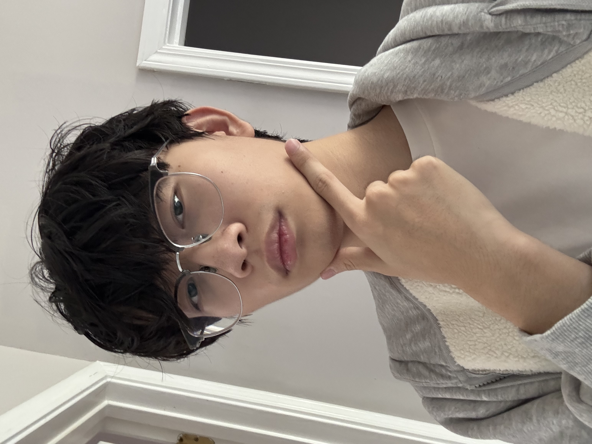
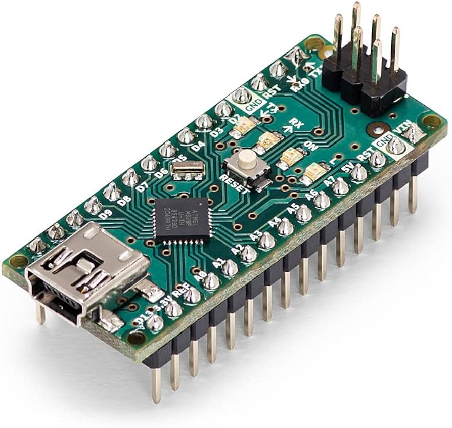

I'm a first-year ECE student at Georgia Tech building toward a career in aerospace and clean-energy engineering. Right now that means circuits, embedded systems, and a VIP research team studying how to harvest energy from vibration — with NASA and SpaceX as the long-range targets. This site tracks that build, from coursework to code to what's next.

I'm an Electrical Engineering student at Georgia Tech with hands-on experience in circuit analysis, digital systems design, and low-level programming in C and RISC-V assembly. I'm passionate about energy systems and hardware-software integration, with a research interest in renewable energy technologies for space applications.
My focus areas are embedded systems, aerospace, and clean energy. That interest is what led me to Georgia Tech's VIP (Vertically Integrated Projects) program, where I work with the M.A.R.S. team on a NASA Kennedy Space Center / JPL research partnership investigating piezoelectric and triboelectric energy harvesting — converting mechanical vibration and motion into usable electrical energy for low-power aerospace applications.
Outside of research, I'm building out the fundamentals — working through RC/RL transient analysis, Thévenin and Norton equivalents, and op-amp design in my circuits coursework, and applying computer architecture concepts (RISC-V assembly, memory layout) from my systems classes to embedded projects.
I speak English and Mandarin Chinese fluently and am working on Spanish. I'm seeking internship or co-op opportunities in renewable energy systems and space exploration.
My long-term goal is to work as a systems or power engineer at an organization operating at the edge of aerospace or clean-energy technology — NASA, SpaceX, or a renewable energy company solving hard power-delivery problems. My ECE Roadmap at Georgia Tech is built around the Electrical Energy Systems and Electronic Devices threads, which line up directly with that goal: together they go deepest on power electronics, energy conversion, and the physical devices that make energy systems work.
Between now and graduation, the plan has four stages. I'm currently in the first: building the fundamentals through core ECE coursework (circuits, electromagnetics, computer architecture) while getting hands-on research exposure through VIP M.A.R.S. The next stage is proving I can apply that knowledge outside the classroom — I'm targeting NASA's L'SPACE pre-professional program, specifically the Mission Concept Academy and the Proposal Writing and Evaluation Experience, as a structured way to get real exposure to how NASA mission proposals are built and reviewed. From there, I want to pursue an aerospace- or energy-focused internship or co-op to get direct industry experience, and finally to graduate positioned for a full-time role in power systems, embedded avionics, or energy-harvesting hardware.
Pulled straight from my degree plan: 49 transfer/AP credit hours coming in, then semester by semester through junior year, totaling 131 credit hours toward the BSEE.
This section is scalable by design — it will grow with every course, VIP semester, and side project between now and graduation. Below is my Discovery Project, in progress this semester, alongside an earlier embedded-systems project from coursework.
For my ECE 1100 Individual Discovery Project, I'm building a heart rate monitor that reads and reports a person's pulse in real time. A pulse sensor detects the small changes in blood volume that occur with each heartbeat, and an Arduino Nano processes that analog signal and calculates beats per minute (BPM) — displayed either on the serial monitor or on an LED screen. I've never worked with an Arduino before, so this project doubles as my introduction to microcontroller programming and analog signal acquisition, alongside the breadboard and hardware-wiring skills that go with it.

The build is organized around a six-week timeline. I start by getting the pulse sensor talking to the Arduino IDE and confirming I can read a raw analog signal on the Serial Monitor, then move to visualizing that signal on the Serial Plotter to understand what an actual pulse waveform looks like coming off the sensor. From there, the core technical challenge is peak/threshold detection — picking individual heartbeats out of a noisy analog signal and displaying each detected beat on the LED screen. Once beat detection is reliable, I calculate BPM from the time between detected beats and calibrate the readings against manual pulse counting, then add smoothing and averaging so the displayed number doesn't jump around between beats. The final week is reserved as buffer time for testing plus preparing the writeup and demo.
The designed outcome is a sensor that consistently and accurately measures BPM for whoever is holding it — simple in concept, but it touches a lot of fundamentals at once: analog-to-digital signal acquisition, noise filtering, real-time processing on constrained hardware, and turning a raw sensor reading into something a person can actually read and trust. I'm using Arduino's own project hub as my main reference as I work through the build.
This project won't be complete by the ePortfolio publish deadline — per the assignment structure, it's expected to be finished in time for the Discovery Project Showcase later in the semester. I'll be updating this section with build progress, waveform captures, and a demo video as development continues.
Built individually for ECE 2035 (Intro to Software/Hardware Design), Buzz Blitz is a real-time, side-scrolling handheld game deployed on an ESP-32-C6 microcontroller with a uLCD display, combining C programming, hardware I/O, and data structures. I implemented player physics, collision detection, and game state logic in C, integrating joystick and button inputs for control. I also designed and debugged a hash-table-based map system to efficiently track dynamic game objects across a scrolling environment — layered on top of core gameplay mechanics including gravity, a "stinger beam" attack with splash damage, and a replay and leaderboard system.
This was my first real experience with the full embedded development loop: writing C close to the hardware, managing limited memory and processing budget on a microcontroller, and debugging behavior that only showed up on-device. It directly informs how I approach the sensor- and power-constrained systems I now work with in VIP research.
Vertically Integrated Projects program, Georgia Tech, in partnership with NASA Kennedy Space Center and JPL. Researching piezoelectric and triboelectric energy harvesting: converting mechanical vibration and motion into usable electrical energy for low-power aerospace applications.
Applied RISC-V assembly, C memory management, and compilation/optimization concepts through embedded projects including Buzz Blitz.
Supervised the Experimental Design event at the Georgia State Science Olympiad tournament, overseeing competition logistics and fair evaluation for 80+ teams.
A one-page version of my resume, formatted for the Georgia Tech ECE Career Fair, covering education, VIP research, and embedded projects.
Open to conversations about VIP research, aerospace and energy internships, or anything embedded-systems related. Reach out below.